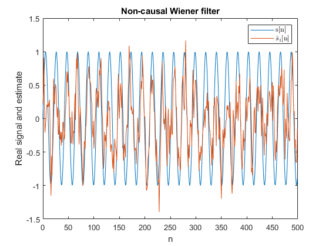
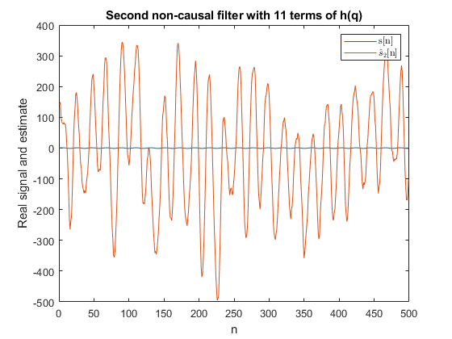
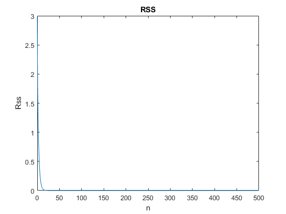

% Homework 2 clear;clf; % -------------------- Calculate Rss and Ryy --------------------- % Get the auto-covariance function for Rss. It is symmetric so just % calculate from 0 to 5. Rss = zeros(1,11); Rss(1) = 2.9804; % Rss_0 Rss(2) = 1.6863; % Rss_1 for k = 3:11 Rss(k) = 0.7*Rss(k-1); end % Get the auto-covariance function for Ryy. Ree_0 = 2; Ryy = zeros(1,11); Ryy(1) = Rss(1) + Ree_0; for k = 2:11 Ryy(k) = Rss(k); end % Solve the linear equation system to get h(-5)...h(5) % As in page 273 A = toeplitz(Ryy(1:11),Ryy(1:11)); b = [Rss(6) Rss(5) Rss(4) Rss(3) Rss(2) Rss(1:6)]'; h = A\b % = inv(A)*b % ANSWER: % h = 0.0040 0.0084 0.0197 0.0470 0.1123 0.4910 0.1123 0.0470 0.0197 0.0084 0.0040 % ANSWER: The values of h found will be used to compute H(q). See the % continuation in the solution by hand. % ---------------------------- Simulate the signals ----------------------- % Create real signal N = 500; n = 0:N-1; sigmaNoise = 1; f = 0.3; s = sin(f*n); % Interesting signal y = s + sigmaNoise*randn(1,N); % Signal + noise % -------- Filter y using the optimal non-causal Wiener filter ------------ % Anti-causal part %a_ac = [1 -3.37]; %b_ac = [0.5 -3.37]; %sHat_ac = filtfilt(b_ac, a_ac, y); % Causal part a_c = [1 -0.3]; b_c = [0.5 0]; sHat_c = filtfilt(b_c, a_c, y); sHat = sHat_c; MSE_1 = sum((s - sHat).^2)/length(s) % MSE_1 = 0.2621 % ANSWER: MSE for non-causal filter = 0.2621 % Plot figure(1); plot(n, s); hold on; plot(n, sHat); legend('s[n]','$\hat{s}_1$[n]','Interpreter','latex'); xlabel('n');ylabel('Real signal and estimate'); title("Non-causal Wiener filter"); % ----------------- Filter y using the h(-5),...,h(5) --------------------- a = 1; a = h(6:11); % Just send the causal part to filtfilt sHat_2 = filtfilt(b,a,y); figure(2); plot(n, s); hold on; plot(n, sHat_2); legend('s[n]','$\hat{s}_2$[n]','Interpreter','latex'); xlabel('n');ylabel('Real signal and estimate'); title("Second non-causal filter with 11 terms of h(q)"); MSE_2 = sum((s - sHat_2).^2)/length(s) % 3.65e4 % ANSWER: MSE for second filter = 3.65e4, not reasonable % ---------------- Plot Rss --------------- Rss = zeros(1,length(y)); Rss(1) = 2.9804; % Rss_0 Rss(2) = 1.6863; % Rss_1 for k = 3:length(y) Rss(k) = 0.7*Rss(k-1); end figure(3); plot(n,Rss); xlabel("n");ylabel("Rss");title("RSS"); % ANSWER: I didn't have the time to plot the second filter so I can't % really explain why their performances are alike.
h =
0.0040
0.0084
0.0197
0.0470
0.1123
0.4910
0.1123
0.0470
0.0197
0.0084
0.0040
MSE_1 =
0.2515
MSE_2 =
3.1818e+04
  